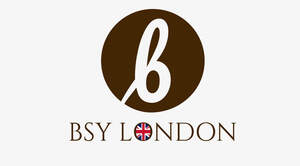

Trade Mark Journal No.2026/010 6 March 2026
UK00004345006 24 February 2026 (18,25)

- Class 18
- Hand bags; Shoulder bags; Tote bags; Grips for holding shopping bags; Tool bags of leather, empty; Wrist mounted carryall bags; Duffle bags; Nose bags [feed bags]; Bags (Nose -) [feed bags]; Duffel bags; Belt bags and hip bags; Grocery tote bags; Sling bags; Wash bags for carrying toiletries; Bags; Cross-body bags; Grips [bags]; Carry-all bags; Bucket bags; Nose bags; Carrying bags; Bum bags; Tool bags, empty; Cloth bags; Drawstring bags; Clutch bags; Crossbody bags; Luggage bags; Carry-on bags; Shoe bags; Leather bags; Canvas bags; Garment bags; Belt bags; Waist bags; Leather bags and wallets; Umbrella bags; Children's shoulder bags; Toiletry bags.
- Class 25
- Scarves; Cashmere scarves; Silk scarves; Knitted clothing; Shoulder scarves; Snoods [scarves]; Scarfs; Cashmere clothing; Headbands [clothing]; Headbands for clothing; Shawls; Cowls [clothing]; Neck scarves; Quilted jackets [clothing]; Silk clothing; Shawls and headscarves; Kerchiefs [clothing]; Mitts [clothing]; Knitwear [clothing]; Head scarves; Embroidered clothing; Knit jackets; Woolen clothing; Hats (Paper -) [clothing]; Paper hats [clothing]; Fabric belts [clothing]; Shawls and stoles; Handwarmers [clothing]; Paper hats for use as clothing items; Shoulder wraps [clothing]; Shoulder wraps for clothing; Neck scarves [mufflers]; Mufflers [neck scarves]; Mufflers as neck scarves; Fingerless gloves as clothing; Gloves [clothing]; Gloves as clothing; Knitted underwear; Neck tube scarves; Woven clothing; Knitted gloves; Jackets [clothing]; Beanie hats; Bandeaux [clothing]; Knit shirts; Wraps [clothing]; Aprons [clothing]; Sweaters; Shoulder straps for clothing; Wearable blankets in the nature of blankets with sleeves; Veils [clothing]; Knitted baby shoes; Linen clothing; Turtleneck sweaters; Leather clothing; Clothing of leather; Leather (Clothing of -); Collars [clothing]; Clothing; Shawls [from tricot only]; Neck scarfs [mufflers]; Party hats [clothing]; Golf clothing, other than gloves; Jackets (Stuff -) [clothing]; Stuff jackets [clothing]; Ready-to-wear clothing; Pocket squares [clothing]; Gabardines [clothing]; Muffs [clothing]; Furs [clothing]; Nappy pants [clothing]; Jerseys [clothing]; Leather belts [clothing]; Capes (clothing).
BSY London Fashion Limited